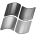

Horus is a software system which allows to control IL‑2 Sturmovik dedicated servers and to gather statistics from them. It is an alternative to IL‑2 Server Commander and FBDaemon.
| System consists of | ||
| Commander | Web Application | Mission Generator |
| Supported operating systems | |
 |
 |
| Linux | Windows |
| Supported languages | |
| English | Russian |